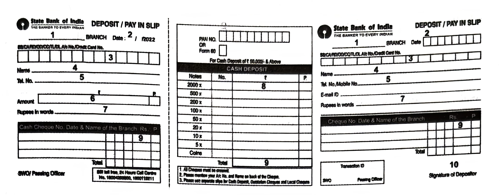

4. Read the following passage and answer ANY FOUR questions given
below.
4 × 1 = 4M
He frowned at his paper pad for a few seconds. His face suddenly lightened, and I saw he had come to a decision. My hands gripped the arms of the chair as I waited to receive it. Rising, he shook me briskly by the hands and told me he had pleasure in admitting me to St Swithin’s.
I wondered for some time afterwards how he had been able to discover from these questions that I had the attributes of a successful doctor, but I later found that even this brief interview was superfluous, as the Dean always took the advice of his old secretary and told applicants whose looks this man disliked that there were no vacancies.
i) “My hands gripped the arms of the chair…” What does it express?
ii) What was the narrator waiting for?
iii) What did the Dean do raising from the chair?
iv) What made the narrator wonder?
v) Later he found out something. What was it?
vi) Pick the word, from the passage, that means not necessary.
vii) How were the applicants selected for admission?
viii) Why was the interview superfluous?
5. Read the following passage carefully and answer ANY FOUR questions
given after it in a word or in a sentence each.
4 × 1 = 4M
Ananda Nilayam (Delight’s Dwelling / Home of Happiness)! The name speaks volumes about the place. Situated at Kondapaka (Siddipet district), two hundred metres off Hyderabad–Siddipet road, on a one-hundred-acre site, the place mainly serves the old (now forty inmates) with no emotional support from their children. Even orphaned children (now numbering around fifty) are provided shelter, care, and education. What looked like dry barren land with scattered bushes before 2010 is now a tastefully landscaped garden. Chirping birds, dancing twigs, fragrant flowers greet the visitors and the inmates.
A teacher from Siddipet, Mr. Peddi Vaikuntam, along with other trustees and with advice and active help from a good number of elders and well-wishers, initiated the process and has been carrying on the mission with success rates beyond expectation. An industrialist from Karnataka, Ms. Sudha Janardan, contributed Rs. Fifty Lakhs to this project. Charity from rice millers of Siddipet and Hotel Suprabhath of Hyderabad helps the trust provide food, medical services, etc. to the inmates at a nominal charge. The trust has been serving gods, humans, and nature with beauty, quality, and equality. Each face here reflects the name of the place!
Answer the following questions.
i) Does the name of this Old Age Home indicate the mood and response of the inmates? Support your answer with a sentence from the passage.
ii) Where is this Home for the Aged located?
iii) Who initiated the project and who has been actively monitoring all the activities of the home?
iv) How do they manage to provide good food and medical facilities with nominal charges from the inmates?
v) Name the donor from a neighbouring state and the sum donated by her.
vi) Write the word used in the passage that means kindness, support, or money extended to people in need.
vii) Find out the phrasal verb used in the passage to mean continuing with the work and taking it forward.
viii) Mark stress on the right syllables of the words charity, quality, and equality.
6. Study the advertisement given below and answer ANY FOUR questions
given after it.
4 × 1 = 4M
i) Expand SHIP.
ii) What are the eligibility criteria for participating in the programme?
iii) Can very young boys and girls participate in this programme?
iv) State any two themes of the internship programme.
v) Registration is both online and offline. Write true or false.
vi) When is the programme scheduled to begin?
vii) The number of hours of the schedule is ________ (Fill in the blank.)
viii) Write the word used in the ad to mean “a short term training period for practical experience”.
7. Read the table below and answer questions given after it.
4 × 1 = 4M
i) What does the table show?
ii) How many continents are mentioned in the table?
iii) Which continent has the largest area?
iv) Which continent has the smallest number of countries?
v) Which is the most populous continent?
vi) Africa has the highest number of countries. Write true or false.
vii) How many countries does North America have?
viii) Which continent has the smallest area?
8. Rewrite the following passage/sentence using punctuation marks
wherever necessary.
8 × ½ = 4M
a) sir shall i come in
b) dr kalams words proved prophetic with full support from the college correspondent Dr Vasudevan laid the first 60 feet long plastic road within the campus
9. Match the following words in Column-A with their meanings or
definitions in Column-B.
4 × 1 = 4M
| Column A | Column B |
|---|---|
| i) pedestrian | a) one who speaks many languages |
| ii) quarantine | b) one who looks at the dark side of things |
| iii) pessimist | c) sole right to produce or sell an invention |
| iv) physician | d) a person walking on a street |
| v) patent | e) a confinement to one place to prevent the spread of infection |
| vi) polyglot | f) one who attends to sick people and prescribes medicines |
10. Fill the blanks in the following sentences with suitable idiomatic
expressions given below. Make necessary changes in the idioms if
needed.
4 × 1 = 4M
by leaps and bounds judge a book by its cover
a labour of love
Achilles heel by fair means or foul
part and parcel
i) Preparing this book is clearly ________.
ii) Our business flourished ________.
iii) Maths has always been my ________.
iv) Don’t get disheartened at losing your form. It’s ________ of being a professional.
v) They never gave up trying to recover their property ________.
vi) You can’t ________. Just because he looks strange, that doesn’t mean he is not a nice person.
11. Make four meaningful sentences based on the verb patterns given
below.
4 × 1 = 4M
An example is given as a model.
| Subject | Transitive Verb | Indirect Object | Direct Object | Adverbial (optional) |
|---|---|---|---|---|
| Sheela | gave | me | this book | in the USA |
1) ____________________________
2) ____________________________
3) ____________________________
4) ____________________________
12. Fill in the blanks of the given bank form based on the information
furnished below.
8 × ½ = 4M
You are Ch. Krishna. Your Account number is 56218561932. Deposit an amount of ₹9,300 into your Savings Bank Account with the SBI, Punjagutta Branch. Your mobile number is 8374373612. The amount is in the denomination of ₹500 notes (18 notes) and the remaining are ₹100 notes.

1) ____________________________
2) ____________________________
3) ____________________________
4) ____________________________
5) ____________________________
6) ____________________________
7) ____________________________
8) ____________________________
9) ____________________________
10) ____________________________
13. Prepare a Curriculum Vitae / Resume / Bio-data in response to the
following advertisement.
1 × 4 = 4M
14. Write a letter to the front line warriors of your local hospital
expressing gratitude for their services during the pandemic.
1 × 4 = 4M
(OR)
Write a letter written by Swamy requesting the police to control drunken and driving.
15. Read the following passage and make notes. Add a suitable title.
1 × 4 = 4M
“Thanks to the internet, women can become entrepreneurs. In the last four years between 2012 and 2015, the number of new women-owned small and medium business Pages on Facebook has increased six-fold,” said Ankhi. “Kalpana Rajesh, a woman from India, was inspired to start her own business making bridal hair accessories after having done so for years for friends. She started her business in 2012 with three people – herself, her domestic worker and her friend. Today, she employs more than 200 women, working across thirty-six branches from Delhi to Tuticorin, with multiple product lines. She says that without Facebook, she estimates it would have taken her fifteen to twenty years to grow her business to the same size it is today. Not only has Kalpana made a difference to her own life, but she has also made a telling difference to the lives of more than 200 women who are now earning their livelihood, thanks to Kalpana.”
16. Mark the stress for ANY EIGHT of the following words.
8 × ½ = 4M
i) population ii) hairbrush
iii) doubt iv)
agitation v) today
vi) television vii) present
viii) employee ix)
economy x) probability
17. Construct a dialogue between a passenger and a booking clerk.
1 × 4 = 4M
(OR)
Build a dialogue between a doctor and a patient.